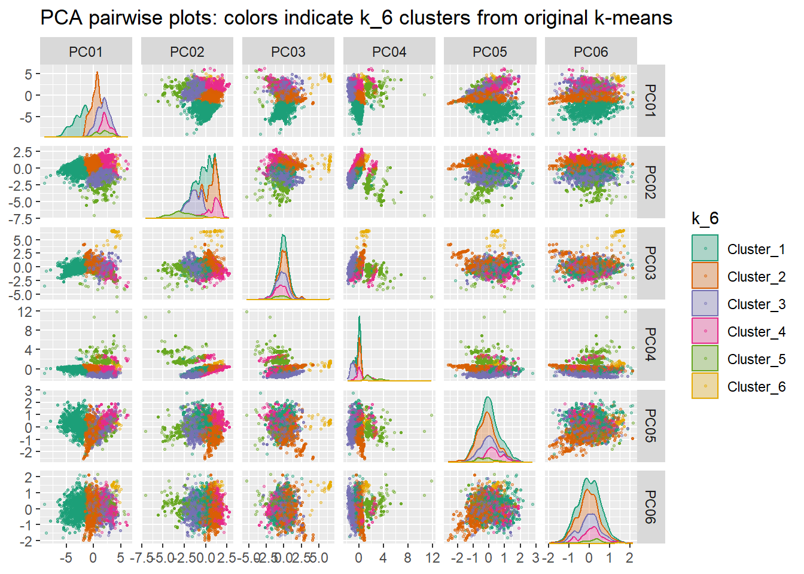

library(workflows)
library(parsnip)
library(tidyverse)
library(tidymodels)
library(glue)
library(tidyclust)
library(factoextra) # trying fviz_nbclust(), which gives elbow, silhouette, and gap statistic
library(hopkins)
library(fpc)
library(ggforce)
library(gt)
d <- readr::read_csv("./data/clean_mu_weighted_soil_props.csv") %>%
select(-contains("comp_pct"))
old_names <- colnames(d)
new_names <- stringr::str_replace_all(old_names, "_r_value", "")
colnames(d) <- new_names
# this is a dataframe of the results from my first k-means
# run using same methods as Devine et al. Loading it so I
# can use the colors in my PCA plots to get a qualitative
# sense of whether we "see" similar clusters after PCA
clust_membership <- readr::read_csv("data/mukey_cluster_assignments_and_soilprops.csv") %>%
select(mukey, k_6)
d <- dplyr::left_join(d, clust_membership, by = "mukey")11 Do PCA before k-means
11.1 Overview
After lots of reading during the drafting phase of methods & results for my original k-means analysis, I found many authors in soil science, climate/atomspheric science, and geochemistry who use principal components analysis (PCA) for data reduction prior to doing k-means. The argument for doing this is that when you have highly correlated variables), including them all basically gives more weight to the correlated variables. If they are highly correlated, they contain most of the same “information”, and by including both variables you are giving that “information” more weight in the calculation of (dis)similarity matrix (Euclidean distances) that we ultimately use for clustering.
My plan is to do PCA, run k-means again, and compare the results with my original k-means analysis. I think this would be a valuable thing to add to my paper, as we can make an argument for whether one method or another might be more generalizable for others who want to use this technique for creating similar conceptual clusters from a regional set of soil data (presumably with a slightly different set of variables given the specific context).
11.2 Implementation
There is an easy way to do PCA as a pre-processing step in the {tidymodels} framework I’ve been doing using the step_pca() function. Under the hood, this uses stats::prcomp() to do the PCA.
Much of this code will be similar to Chapter 10, but with some additional exploratory plots as I think about how to incorporate this information in my manuscript.
11.3 Setup
Reminder of what the data look like:
head(d)Reminder of the transformations I chose to improve variable distributions and make them normal-ish.
- Square root: clay, carbonates
- Log10: organic matter, cec, lep, ksat, awc
- Cube (^3): bulk density
- None: ec, ph
11.4 Pre-process data (build recipe)
- apply some transformations to achieve more normal distributions,
- then standardize (
step_normalize) by subtracting the mean and dividing by 1 sd - then PCA
rec_spec <- recipe(~., data = d) %>%
update_role(mukey, new_role = "ID") %>%
update_role(k_6, new_role = "cluster_k6") %>%
# note this is log10 (the default is ln)
step_log(om, cec7, ksat, awc, lep, base = 10) %>%
step_mutate(dbthirdbar = dbthirdbar^3) %>%
step_sqrt(claytotal, caco3) %>%
step_normalize(all_numeric_predictors()) %>%
step_pca(all_numeric_predictors(), num_comp = 10)
rec_spec── Recipe ──────────────────────────────────────────────────────────────────────── Inputs Number of variables by rolepredictor: 10
cluster_k6: 1
ID: 1── Operations • Log transformation on: om, cec7, ksat, awc, lep• Variable mutation for: dbthirdbar^3• Square root transformation on: claytotal, caco3• Centering and scaling for: all_numeric_predictors()• PCA extraction with: all_numeric_predictors()11.5 Functions to run PCA, visualize results
This is modified from the “Tidy models with R” book, section 16.5 “Feature Extraction Techniques”.
I removed the “dat” argument because I’m using the dataset that is already in my recipe. I also set new_data = NULL in bake as a reminder of this. In prep, it is default to have retain=TRUE, but again I’m explicitly typing it as a reminder to myself of what the defaults / where the data is coming from.
run_pca <- function(recipe){
recipe %>%
# here, prep estimates the added PCA step
prep(retain = TRUE) %>%
# Process the data (new_data=NULL means use data in recipe)
bake(new_data = NULL)
}
# Create the scatterplot matrix
plot_validation_results <- function(pca_df) {
pca_df %>%
ggplot(aes(
x = .panel_x,
y = .panel_y,
color = k_6,
fill = k_6
)) +
geom_point(alpha = 0.4, size = 0.5) +
geom_autodensity(alpha = .3) +
facet_matrix(vars(-c(mukey, k_6)), layer.diag = 2) +
scale_color_brewer(palette = "Dark2") +
scale_fill_brewer(palette = "Dark2")
}11.6 Principal Components Analysis (PCA)
11.6.1 Visualize PCA results
pca_results <- run_pca(rec_spec)
write_csv(pca_results, "data/pca_scores.csv")
# just plotting the first 5 PCs so we can actually seem them
pca_results %>%
select(mukey, k_6, PC01, PC02, PC03, PC04, PC05, PC06) %>%
plot_validation_results() +
ggtitle("PCA pairwise plots: colors indicate k_6 clusters from original k-means")
11.6.2 Extract loadings
Took me FOREVER to figure out why I wasn’t able to extract my loadings with the example code from the step_pca documentation here using tidy(prepped_rec, number = 2, type = "coef"). After much frustration, I figured out that the “number” argument needs to correspond to the PCA step in the tidied dataframe of my prepped recipe… in all the documentation this number is 2, so I kept trying that and getting my bulk density mutation step. In my case, the number is 5.
pca_prep <- prep(rec_spec)
# 'type = "coef"' here gets variables loadings per component
pca_loadings <- tidy(pca_prep, 5, type = "coef")
write_csv(pca_loadings, "data/pca_loadings.csv")ltab <- loadings_dat %>%
select(terms, value, component) %>%
pivot_wider(names_from = component,
values_from = value,
names_prefix = "PC") %>%
gt(rowname_col = "terms") %>%
tab_stubhead(label = "term") %>%
fmt_number(
columns = contains("PC"),
decimals = 2
) %>%
sub_missing() %>%
tab_header(title = "PC Loadings")
gtsave(ltab, filename = "figs/pc_loadings_table.docx")11.6.3 Extract variance
Note the number of rows in the pca_var dataframe: 40. We have 4 different terms calculated for each component:
- variance
- cumulative variance
- percent variance
- cumulative percent variance
pca_var <- tidy(pca_prep, 5, type = "variance")
write_csv(pca_var, "data/pca_variance.csv")First we can look at % variance explained by each component:
pca_var %>%
filter(terms == "percent variance") %>%
ggplot(aes(x = component, y = value)) +
geom_col() +
geom_text(aes(x = component, y = value+2, label = round(value, 1)), color = "red") +
theme_bw() +
ylab("Percent variation explained") +
scale_x_continuous(breaks = c(1:10))Next, we can look at cumulative % explained
pca_var %>%
filter(terms == "cumulative percent variance") %>%
ggplot(aes(x = component, y = value)) +
geom_col() +
geom_text(aes(x = component, y = value+2, label = round(value, 1)), color = "red") +
theme_bw() +
ylab("Cumulative percent variation explained") +
scale_x_continuous(breaks = c(1:10))And now a more traditional scree plot:
pca_var %>%
filter(terms == "variance") %>%
ggplot(aes(x = component, y = value)) +
geom_point() +
geom_line() +
scale_x_continuous(breaks = c(1:10)) +
theme_minimal() +
ylab("Variance (Eigenvalue?)")11.6.4 Select PCs to keep
For this round, I am keeping the first 5 PCs. This will always be a somewhat subjective decision, something noted by both Jolliffe & Cadima (2016) and the helpfully detailed climate zone paper by Fovell & Fovell 1993 that walks through their process and comparison of 3 vs. 5 PCs for their modeling scenario.
Keeping the first 5 PCs accounts for 90% of the variation in my dataset. It also happens to be the number at which all of my original variables have been loaded on at least one PC (PC5 is the first time we see AWC loaded at all).
Might be interesting, like Fovell & Fovell (1993), to do an additional version with 7 PCs. That gets us at >95% variation accounted for.
dat_for_kmeans <- pca_results %>%
select(mukey, PC01, PC02, PC03, PC04, PC05)11.7 Set model options
# writing a custom function here so I can be explicit
# about the options I'm choosing, and also use within the
# list-col framework I set up with map() below.
km_spec <- function(nclust){
tidyclust::k_means(num_clusters = nclust) %>%
parsnip::set_engine(engine = "stats",
nstart = 10, # 1 is default, >1 recommended
algorithm = "Hartigan-Wong", # H-W is default
iter.max = 20) # default is 10, wasn't always enough
}11.8 Set up data structure and kmeans recipe
Here I set up a dataframe that will catch my modeling results in list columns of the different model objects and return values. The first column I define specifies the range of different cluster sizes (k) that we will try.
I also set up my recipe here, which is much simpler compared to the original version because all of my data has been processed already before running it through k-means. Per the reading I did on 2023-01-11, especially Green & Krieger (1995) and Schaffer & Green (1998), I’m not further standardizing my component scores.
try_clusts <- c(2:20)
km_df <- data.frame(n_clust = try_clusts)
km_rec <- recipe(~., data = dat_for_kmeans) %>%
update_role(mukey, new_role = "ID")
km_rec── Recipe ──────────────────────────────────────────────────────────────────────── Inputs Number of variables by rolepredictor: 5
ID: 111.9 Specify model (for each value of k)
For each unique value of k (2-20), this returns a model specification object (in the kmeans_spec column) based on the custom function I wrote above. The model specification has all the options set about how we want the algorithm to run (methods, number of starts, etc.). We need a different one for each value of k.
The kmeans_wflow column here holds our workflow objects. These objects combine our model specification (from kmeans_spec) with the data recipe (preprocessor) we made above (rec_spec, is same for all models).
# for each unique value of clusters (2:20), returns a model
# specification (kmeans_spec) and a workflow (kmeans_wflow)
# note that the workflow
km_df <- km_df %>%
mutate(
kmeans_spec = map(n_clust, ~ km_spec(nclust = .x)),
kmeans_wflow = map(kmeans_spec,
~ workflow(
preprocessor = km_rec, spec = .x
))
)
# our current data structure
head(km_df, n=3L )# take a look at an example workflow
km_df$kmeans_wflow[3][[1]]
══ Workflow ════════════════════════════════════════════════════════════════════
Preprocessor: Recipe
Model: k_means()
── Preprocessor ────────────────────────────────────────────────────────────────
0 Recipe Steps
── Model ───────────────────────────────────────────────────────────────────────
K Means Cluster Specification (partition)
Main Arguments:
num_clusters = nclust
Engine-Specific Arguments:
nstart = 10
algorithm = Hartigan-Wong
iter.max = 20
Computational engine: stats 11.10 Fit the models
All the steps above were related to specifying different aspects of this model. Now we can actually fit the models.
Some troubleshooting here:
- Started by specifying
tidyclust::fit()but something weird was happening where mystep_normalize()wasn’t included in the pre-processor recipe when I looked at the fitted model object. - If I specify
parsnip::fit(), thenstep_normalize()is included and the values of the cluster centroids are in the expected ranges (centered, scaled). - I also tried this without explicitly specifying the package (so just
fit()) and it worked as expected.
# make a quiet version of fit(), so we can capture results
# and any warning messages from the models
# see troubleshooting notes below
quiet_fit <- purrr::quietly(.f = parsnip::fit)
set.seed(4) # for reproducibility
km_fit_df <- km_df %>%
mutate(km_result = map(.x = kmeans_wflow,
.f = quiet_fit,
# data comes after .f b/c not vectorized over
data = dat_for_kmeans),
km_fit = map(km_result, ~pluck(.x, 'result')),
warn = map(km_fit, ~pluck(.x, 'warnings')),
msg = map(km_fit, ~pluck(.x, 'messages')),
n_iter = map_dbl(km_fit,
~pluck(.x, 'fit', 'fit', 'fit', 'iter' )))
# check out current data structure
head(km_fit_df, n = 3L)# don't need anymore, cleaning up
rm(km_df)11.10.1 View messages & warnings
We can look at any warnings or messages from the modeling process:
km_fit_df %>%
select(n_clust, warn, msg, n_iter)11.10.2 Look at one fit object
As an example, these are what the fitted objects look like.
NOTE the clustering vector here is using the cluster numbers directly from kmeans(). tidyclust assigns names like “Cluster_1”, “Cluster_2” etc. , but the numbers do NOT necessarily match with what kmeans() returns. The CLUSTERINGS are the same, but the numbers are not necessarily so. So 2 in this “Clustering Vector” below is NOT necessarily equal to tidyclust “Cluster_2” that you might get by using the extract_cluster_assignment function. To keep things consistent, I’m always using the cluster names assigned by tidyclust.
examp_fit <- km_fit_df$km_result[[4]][['result']]
examp_fit══ Workflow [trained] ══════════════════════════════════════════════════════════
Preprocessor: Recipe
Model: k_means()
── Preprocessor ────────────────────────────────────────────────────────────────
0 Recipe Steps
── Model ───────────────────────────────────────────────────────────────────────
K-means clustering with 5 clusters of sizes 1463, 431, 1809, 1096, 2073
Cluster means:
PC01 PC02 PC03 PC04 PC05
1 1.5136139 -1.1675498 -0.04287291 -1.011715005 -0.1041855
2 1.7443425 -2.6232190 -0.74284903 2.312509274 -0.1599810
3 1.6349352 1.1528420 -0.02833620 0.175076730 0.2152876
4 -3.7357281 -0.3166354 -0.15275027 -0.001684125 0.4859401
5 -0.8825222 0.5307642 0.29019078 0.081321539 -0.3379982
Clustering vector:
[1] 4 4 4 5 5 4 4 4 4 4 5 4 4 5 4 3 5 5 4 4 5 5 4 4 5 4 4 4 4 4 5 5 4 4 4 4 4
[38] 5 5 5 4 4 4 4 4 5 4 4 4 4 4 5 5 5 3 1 1 5 3 3 3 3 3 2 4 4 4 4 1 1 3 3 4 4
[75] 1 4 1 5 5 5 3 3 3 2 1 4 4 4 4 4 4 4 3 4 4 1 5 4 4 4 3 3 1 1 1 1 4 4 5 5 5
[112] 4 4 4 3 1 4 4 4 4 1 3 3 3 3 4 4 4 4 5 5 4 4 4 4 5 4 5 1 5 4 4 4 4 4 4 1 4
[149] 4 4 1 5 5 3 2 5 2 4 5 5 5 4 1 1 1 1 5 5 4 4 4 5 5 4 4 5 5 1 1 1 5 3 5 5 3
[186] 1 1 3 3 3 5 5 1 3 5 5 5 5 4 4 4 4 4 4 4 5 3 3 3 3 3 3 3 3 3 3 3 3 3 1 3 1
[223] 1 3 4 4 3 3 3 1 4 4 4 3 3 4 1 5 3 3 4 5 1 1 5 3 4 3 3 2 4 4 4 5 2 5 4 4 1
[260] 4 1 4 4 4 4 5 4 4 5 4 4 4 4 4 4 4 4 5 5 5 5 4 4 5 5 4 4 4 5 4 4 4 4 5 5 5
[297] 5 5 4 4 4 4 5 4 5 4 4 5 5 5 5 5 4 4 4 4 4 4 4 4 4 4 4 4 4 4 4 5 4 4 4 4 4
[334] 5 5 5 2 3 1 1 2 2 2 2 1 2 1 1 3 3 1 1 3 2 1 3 3 1 1 2 5 1 3 1 1 5 2 1 1 3
[371] 5 5 3 5 5 3 3 2 5 3 4 4 1 1 3 3 3 3 3 3 3 3 3 3 3 3 3 1 3 1 1 3 3 3 1 1 1
[408] 1 1 3 5 5 3 3 3 3 5 5 5 5 3 5 3 5 5 1 1 1 3 5 3 5 5 5 3 3 3 4 4 4 3 3 4 5
[445] 5 3 3 3 3 3 1 3 3 3 3 1 4 3 4 4 5 3 3 3 3 5 3 3 3 1 1 3 3 3 3 3 1 3 3 3 3
[482] 1 3 5 5 5 1 5 5 3 3 5 3 3 3 1 5 3 3 3 1 3 3 1 1 1 3 3 3 1 3 3 3 3 3 3 3 1
[519] 5 5 1 1 1 3 3 3 3 3 4 4 5 5 3 3 3 5 5 3 3 5 5 1 3 5 1 1 5 4 5 1 1 2 5 4 5
[556] 5 1 5 1 5 1 1 1 1 5 5 1 1 1 1 1 3 1 5 1 5 3 3 1 5 1 1 1 3 1 3 1 1 1 5 5 5
[593] 3 3 1 1 1 3 3 1 5 4 1 3 3 5 3 3 1 3 4 5 5 5 1 5 1 5 3 3 3 3 3 3 1 1 1 1 1
[630] 5 3 3 3 3 5 5 5 5 3 5 5 5 1 3 3 3 5 5 5 5 3 3 3 3 5 1 1 1 4 4 4 4 5 5 5 5
[667] 5 1 5 5 5 5 5 5 5 5 5 5 3 5 5 5 4 3 3 3 3 3 3 3 3 3 4 4 4 4 4 4 5 5 5 5 4
[704] 4 5 4 4 4 4 4 4 4 4 4 4 4 4 5 4 4 4 4 4 4 4 4 5 4 4 4 1 5 5 4 4 5 4 4 5 4
[741] 4 4 4 4 5 4 4 5 4 4 1 1 1 1 1 5 1 5 5 4 1 3 5 3 5 1 3 1 1 3 5 3 3 5 3 3 1
[778] 1 2 1 1 1 1 1 1 5 5 4 4 1 3 3 1 3 3 5 3 1 3 3 1 1 1 1 5 1 1 1 5 3 1 1 1 1
[815] 3 1 1 1 1 1 1 1 1 5 5 5 3 3 5 5 3 3 3 1 3 3 1 1 5 5 5 5 5 4 1 1 1 3 2 3 3
[852] 3 2 1 1 2 1 2 2 3 3 3 2 2 2 2 5 2 2 2 2 2 2 5 4 4 2 5 2 2 4 4 4 2 5 5 4 5
[889] 5 1 3 3 3 1 3 1 3 1 2 1 1 3 3 2 4 2 5 1 1 3 3 4 1 1 1 1 1 2 2 2 5 2 2 5 2
[926] 2 2 2 2 2 3 5 5 3 4 5 2 2 2 3 3 1 3 4 4 4 4 3 3 2 1 1 2 2 2 4 4 1 4 4 5 5
[963] 5 3 1 3 1 4 4 4 3 3 1 1 5 5 4 4 1 5 3 4 5 4 4 4 5 1 1 5 4 4 4 4 3 3 3 2 4
[1000] 4 5 3 2 5 2 5 4 1 4 4 4 4 4 1 5 5 1 1 5 5 5 5 1 3 3 3 1 1 1 5 1 5 5 3 1 1
[1037] 1 1 3 3 1 5 1 1 1 5 5 1 3 3 3 3 4 4 1 3 3 3 3 3 3 3 1 5 5 1 1 3 3 3 1 5 5
[1074] 1 3 3 5 3 1 3 3 1 1 1 5 5 1 1 1 1 3 3 3 3 3 3 3 3 1 1 1 3 1 1 3 3 1 1 1 5
[1111] 5 5 3 5 3 3 1 1 1 3 3 1 3 3 3 4 1 3 3 3 4 4 4 4 4 1 4 5 4 4 4 4 4 4 4 4 4
[1148] 4 4 4 3 4 4 4 4 5 4 4 4 5 3 5 4 4 4 4 4 4 4 4 3 5 1 5 4 3 5 3 5 5 4 4 4 4
[1185] 4 4 4 5 5 5 5 5 4 5 4 4 4 5 3 5 5 5 5 4 4 4 4 4 3 3 4 4 4 5 5 3 3 5 3 5 5
[1222] 3 3 1 5 5 4 4 4 5 5 3 5 5 5 5 1 1 5 5 5 5 5 5 3 3 3 3 1 5 5 5 5 5 5 4 4 4
[1259] 1 5 5 5 5 5 5 5 5 4 4 1 1 1 4 3 5 3 5 5 5 4 5 5 5 5 3 3 3 5 5 5 3 5 5 5 5
[1296] 4 4 4 4 1 3 3 3 3 3 5 5 5 1 5 5 5 3 5 3 1 1 4 4 4 5 5 4 5 2 2 5 3 1 3 5 1
[1333] 1 3 3 1 3 1 3 1 1 1 3 2 1 5 5 1 1 1 1 1 1 5 5 5 5 5 4 5 5 5 5 5 5 5 5 5 5
[1370] 3 3 1 3 1 3 3 4 4 4 4 5 5 5 5 5 3 1 3 3 5 3 3 3 3 4 5 5 5 5 5 5 5 1 5 5 3
[1407] 3 3 3 3 3 1 1 1 1 3 1 3 3 1 5 1 1 3 1 1 3 1 1 5 5 3 3 3 1 3 3 3 3 3 3 1 1
...
and 156 more lines.A nicer way to look at the results is by accessing specific parts of the fitted model object, as below.
# some basic model metrics
glance(examp_fit)# centroid data (transformed/standardized scale)
centroids <- tidyclust::extract_centroids(examp_fit)
centroids# helpful to add to future plots for examining indiv. clusters
clust_stat <- tidyclust::sse_within(examp_fit)
clust_stat11.11 Model metrics
See also section 7.5 in the Chapter by Tan et al. for more about cluster evaluation.
11.11.1 Extract metrics
metrics_df <- km_fit_df %>%
mutate(
# tot_sse = total sum of squared error
tot_sse = map_dbl(km_fit, ~ sse_total_vec(.x)),
# tot_wss = sum of within-cluster sse
tot_wss = map_dbl(km_fit, ~sse_within_total_vec(.x)),
# sse ratio = wss / total sse,
sse_ratio = map_dbl(km_fit, ~sse_ratio_vec(.x))
)
rm(km_fit_df)
metrics_simple <- metrics_df %>%
select(n_clust, tot_sse, tot_wss, sse_ratio)
metrics_simplerm(pca_prep)
rm(rec_spec)11.11.2 Plot Total WSS
Not a clear “elbow” here, although by the time we get to 10-11 it does seem to be leveling off.
metrics_simple %>%
ggplot(aes(x = n_clust, y = tot_wss)) +
geom_point() +
geom_line() +
theme_bw() +
scale_x_continuous(breaks = c(1:20)) +
xlab("k (number clusters)") +
ylab("sum of within-cluster sse") +
ggtitle("Compare values of k: looking for elbow")metrics_simple %>%
filter(n_clust %in% c(2:12)) %>%
ggplot(aes(x = n_clust, y = tot_wss)) +
geom_point() +
geom_line() +
theme_bw() +
scale_x_continuous(breaks = c(1:12)) +
xlab("k (number clusters)") +
ylab("sum of within-cluster sse") +
ggtitle("Zoom in a bit: looking for elbow")11.11.3 Average Silhouette
From the {tidyclust} documentation:
Another common measure of cluster structure is called the silhouette. The silhouette of a single observation is proportional to the average distance from that observation to within-cluster observations minus the average distance to outside-cluster observations; normalized by the greater of these two average.
In principle, a large silhouette (close to 1) suggests that an observation is more similar to those within its cluster than those outside its cluster.
See also pg. 581 in Tan2018 Chap 7 Cluster Analysis: Basic Concepts and Algorithms
prepped_rec <- prep(km_rec, retain=TRUE)
# using NULL here for new_data b/c I want the
# pre-processed training data
baked_df <- bake(prepped_rec, new_data = NULL) %>%
select(-mukey)
dists <- baked_df %>% as.matrix() %>% dist(method = "euclidean")
silh_df <- metrics_df %>%
mutate(avg_sil = map_dbl(km_fit,
tidyclust::silhouette_avg_vec,
dists = dists),
indiv_sil = map(km_fit,
tidyclust::silhouette,
dists = dists))
indiv_sil_df <- silh_df %>% select(n_clust, indiv_sil) %>%
unnest(indiv_sil) %>%
mutate(across(.cols = c(cluster, neighbor),
.fns = as.character))
write_csv(indiv_sil_df, "data/pca_kmeans_point_silhouettes.csv")
rm(metrics_df)
rm(dists)
rm(prepped_rec)Higher silhouette is better (means observations are closer to their centroids than to other observations). Seems to suggest that 4, 6, 8, 11 would be OK
silh_df %>%
ggplot(aes(x = n_clust, y = avg_sil)) +
geom_point() +
geom_line() +
theme_bw() +
scale_x_continuous(breaks = c(1:20)) +
ggtitle("Overall Average Silhouette") +
labs(subtitle = "Higher is better, possible values [-1,1]")Can also plot the individual silhouettes. For each clustering (model version), we have a silhouette value per observation in the dataset (n=6872). We also have the closest “neighbor” cluster, or the cluster that specific observation would belong to if its home cluster didn’t exist.
Here’s an example of this data for the k=6 clustering. The
neighbor_counts <- indiv_sil_df %>%
group_by(n_clust, cluster, neighbor) %>%
count() %>%
mutate(cluster = str_replace(cluster, "Cluster_", "c"),
neighbor = str_replace(neighbor, "Cluster_", "c"))
k6_neighbor_counts <- neighbor_counts %>%
filter(n_clust == 6)
indiv_sil_df %>%
mutate(across(.cols = c(cluster, neighbor),
~str_replace(.x, "Cluster_", "c"))) %>%
filter(n_clust == 6) %>%
ggplot() +
geom_boxplot(aes(x = neighbor, y = sil_width)) +
geom_point(aes(x = neighbor, y = sil_width),
position = position_jitter(width = 0.1),
alpha = 0.2,
color = "pink") +
geom_text(data = k6_neighbor_counts,
aes(x = neighbor, y = 0.7, label = n),
color = "blue") +
facet_wrap(vars(cluster), scales = "free_x") +
theme_bw() +
ggtitle("k=6 silhouettes")clust_sil_avgs <- indiv_sil_df %>%
group_by(cluster,
n_clust) %>%
summarise(mean_sil = mean(sil_width),
sd_sil = sd(sil_width),
.groups = "drop")
clust_sil_avgs %>%
mutate(cluster = str_replace(cluster, "Cluster_", "c0"),
cluster = case_when(
cluster %in% c("c010", "c011", "c012", "c013", "c014", "c015", "c016",
"c017", "c018", "c019", "c020") ~ str_replace(cluster, "c0", "c"),
TRUE ~ cluster
)) %>%
filter(n_clust %in% c(6:12)) %>%
ggplot() +
geom_col(aes(y = cluster, x = mean_sil)) +
facet_wrap(vars(n_clust), scales = "free_y") +
ggtitle("Average silhouette width per cluster for k=6-12") +
theme_bw()11.11.4 Not used: Gap statistic
For fviz_nbclust(), first couple times running this, got Warning: Quick-TRANSFER stage steps exceeded maximum… Looking online, this seems to be a problem with the model not converging. I added some arguments here that are passed on to kmeans(), to make sure that the algorithm settings here match what I run above, including set.seed()
Continued to get warnings, even though I’m using all the same settings as I use for kmeans up above. Not sure why this is, but I’m not going to spend any more time on it right now. Maybe see if getting the gap statistic through NbClust works better? (Later note: NbClust won’t be a good option either, I can’t alter important kmeans() settings in NbClust). Expect it will take a long time either way, consider running this in a separate script and pulling in the results.
set.seed(4)
fviz_gap_stat(x = baked_df,
FUNcluster = kmeans,
method = c("gap_stat"),
k.max = 10, # only considering 2-10 clusters
nboot = 50, # default is 100
verbose = TRUE,
iter.max = 20, # passed to kmeans
nstart = 10 # passed to kmeans
)11.11.5 Calinski-Harabasz index
Not used: {NbClust} , using {fpc} instead.
- For Calinski-Harabasz index, higher values are better
- Realized after setting this up with
NbClustthat I don’t have the option to pass additional arguments to thekmeansfunction here. So I can’t make the algorithm settings exactly match my main clustering pipeline above (where I implement k-means usingtidyclustand thetidymodelsframework, and where I save the results for further analysis). This is a problem because I know from my original tests that I need to change the iter.max value to avoid non-convergence issues, and I also want to change nstart because nstart >1 is typically known to be best practice (find citation for this).
# keeping this here as a record, but I"m NOT USING this function for the C-H index.
nbc_indices <- NbClust::NbClust(data = baked_df,
distance = "euclidean",
method = "kmeans",
min.nc = 2,
max.nc = 20,
index = "ch") # Calinski and Harabasz
# enframe turns a named vector into a dataframe
ch_index_vals <- enframe(nbc_indices$All.index) %>%
mutate(name = as.integer(name)) %>%
rename(n_clust = name)Trying a different implementation of the Calinski-Harabasz index from the {fpc} package. This is preferred to the above approach, where I originally used the NbClust function from {NbClust} package because I can give this function my clustering generated above (NbClust does its own run of kmeans but I can’t customize it to keep it consistent with
# calinhara wants an observations/variables matrix
# as first argument (as opposed to a distance matrix)
obsvar_mx <- as.matrix(baked_df)
# function to extract and modify tidyclust clusters
# into a integer vector, which I will pass to calinhara()
create_clust_vec <- function(fit_obj){
extract_cluster_assignment(fit_obj) %>%
pull(.cluster) %>%
str_replace(., "Cluster_", "") %>%
as.integer()
}
# apply function to extract clusterings as integer vectors
# map to get a c-h index value for every value of k (2-20)
ch_metrics <- silh_df %>%
select(n_clust, km_fit) %>%
mutate(
clustering_vec = map(km_fit, create_clust_vec),
ch_index = map_dbl(clustering_vec,
~ fpc::calinhara(x = obsvar_mx,
clustering = .x)
))
ch_metrics %>%
ggplot(aes(x = n_clust, y = ch_index)) +
geom_point() +
geom_line() +
theme_bw() +
ylab("Calinski-Harabasz index") +
ggtitle("Calinski-Harabasz") +
labs(subtitle = "Higher is better") +
scale_x_continuous(breaks = c(2:20))11.11.6 Hopkins Statistic
Using the {hopkins} package for this. Citations included in the package documentation (also cite Tan et al., 2019 who give an example of using this for evaluating kmeans clusters).
- Hopkins, B. and Skellam, J.G., 1954. A new method for determining the type of distribution of plant individuals. Annals of Botany, 18(2), pp.213-227.
- Cross, G. R., and A. K. Jain. (1982). Measurement of clustering tendency. Theory and Application of Digital Control. Pergamon, 1982. 315-320.
And a third citation, helpful illustrations:
- Lawson, R. G., & Jurs, P. C. (1990). New index for clustering tendency and its application to chemical problems. Journal of Chemical Information and Computer Sciences, 30(1), 36–41. https://doi.org/10.1021/ci00065a010
Apparently {factoextra} also has a Hopkins statistic, try that here too. (It takes a very long time to run, but returns 0.93, similar to 0.99 returned by hopkins::hopkins()
set.seed(4)
hstat <- hopkins(X = baked_df,
# default, number of rows to sample from the df
m = ceiling(nrow(baked_df)/10),
# default, dimension of the data
d = ncol(baked_df),
# default, kth nearest neighbor to find
k = 1)
hstat[1] 0.9999673hopkins.pval(x = hstat,
# this is the default for hopkins() above
n = ceiling(nrow(baked_df)/10)) [1] 0# below gives 0.9331899 as the result
# which agrees with above
# commenting out because it takes a very long time to run
# factoextra::get_clust_tendency(data = baked_df,
# n = 687,
# graph = FALSE)11.11.7 WSS and Silhouette metrics on one plot
#| echo: false
sil_totwss <- silh_df %>%
select(n_clust, avg_sil, tot_wss, tot_sse, sse_ratio)
ch <- ch_metrics %>%
select(n_clust, ch_index)
met_combined <- left_join(sil_totwss, ch, by = "n_clust")
write_csv(met_combined, "data/pca_kmeans_cluster_metrics.csv")
met2 <- met_combined %>%
pivot_longer(cols = -c('n_clust'), names_to = "metric",
values_to = "value")
met2 %>%
ggplot(aes(x = n_clust, y = value)) +
geom_point() +
geom_line() +
scale_x_continuous(breaks = c(2:20)) +
facet_wrap(vars(metric), ncol = 1, scales = "free") +
theme_bw()11.12 Save model fits
Will save these as Rdata so I can call them up and investigate the cluster centroids more closely in the next chapter.
pca_mods <- silh_df %>%
select(n_clust, km_fit)
save(pca_mods, file = "data/fitted_pca_kmeans_mods.RData")11.13 Save cluster assignments
For each version of the model (each value of k, different numbers of clusters), a MUKEY is assigned to a specific cluster. Here, I’m pulling that data, shaping it into one dataframe (one row per MUKEY, cluster assingments in separate columns). I’m also adding back in the soil property data so we can use this in the next step when evaluating different cluster sizes.
clust_assign_df <- pca_mods %>%
mutate(clust_assign = map(km_fit, ~augment(.x, new_data = dat_for_kmeans)),
mukey_clust = map(clust_assign, ~select(.x, mukey, .pred_cluster)))
assign_mukey_df <- clust_assign_df %>%
select(n_clust, mukey_clust) %>%
unnest(mukey_clust) %>% pivot_wider(names_from = n_clust, values_from = .pred_cluster, names_prefix = "k_")
# drop k_6 column from d (it was from orig k-means clusters,
# used above for viz purposes only)
soil_props <- d %>% select(-k_6)
clust_props <- full_join(soil_props, assign_mukey_df, by = "mukey")
write_csv(clust_props, "data/pca_mukey_cluster_assignments_and_soilprops.csv")